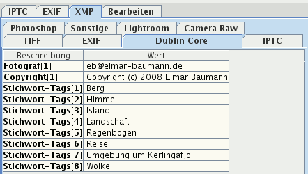

Kartenreiter "XMP"
Im Kartenreiter XMP sehen Sie Daten,
die Sie mit dem Programm Bilder in
XMP-Filialdateien
schrieben oder mit anderen Programmen wie Adobe Photoshop
Lightroom. Daten mit farbigem Hintergrund werden in die
Datenbank geschrieben und Sie können danach suchen.
Gibt es keine XMP-Filialdateien und es sind XMP-Daten eingebettet in
die Bilddatei, werden diese angezeigt. Sie können diese auch in die
Datenbank
speichern lassen.

XMP-Daten können sehr umfangreich sein und sind deshalb auf
verschiedene Kartenreiter verteilt, je
XMP-Namensraum einer. Folgende Namensräume werden
angezeigt:
- Camera Raw Entwicklungseinstellungen, die die
Programme Adobe Camera Raw und Adobe
Photoshop Lightroom in XMP-Filialdateien schreiben
- Dublin Core:
Metadaten wie Stichwörter,
Fotograf, Copyright
- EXIF: Technische Daten, die Digitalkameras in
Bilder schreiben
- IPTC: Ein Teil der
IPTC-Daten
- Lightroom: Metadaten, die das Programm
Adobe Photoshop Lightroom in XMP-Dateien
schreibt, zurzeit hierarchische Stichwörter
- Photoshop: Metadaten, die Photoshop als IPTC
in Bilder schreibt
- Sonstige: Daten früherer XMP-Spezifikationen
- TIFF: Einige technische Daten über Kamera und
Bild